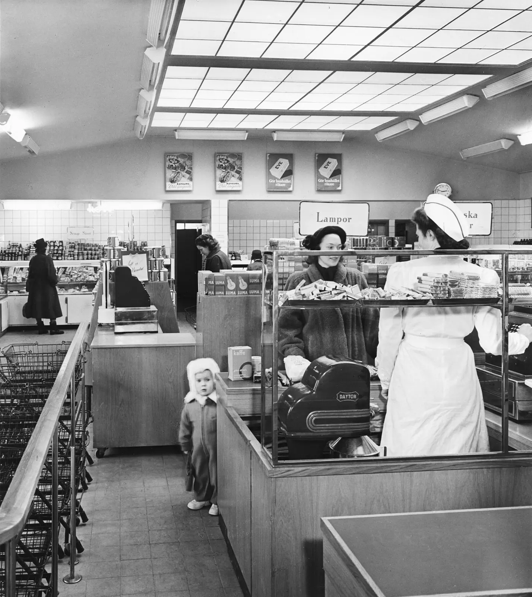

Descrivi ciò che l’immagine dispone prima di decidere che cosa “significa”.
01 · Prima osservazione
Che cosa sta cercando
di venderci?
Nessun autore, luogo o data. Prima osserva come lo spazio organizza attenzione, scelta, quantità e desiderio.
La merce è soltanto ciò che si compra, oppure anche il modo in cui impariamo a guardarla?

02 · Quando una cosa diventa immagine
Una lattina non è
la fotografia di una lattina.
Oggetto, confezione, marchio, scaffale, pubblicità, riproduzione e opera possono riferirsi alla stessa cosa, ma hanno produttori, destinatari e promesse differenti.
STANDARD
merce ≠ immagine della merceoriginale ≠ unicoriconoscere ≠ comprendereesporre ≠ neutralizzare
03 · Il mondo precedente
Non una catena di cause.
Una rete di condizioni.
Tra 1947 e 1968 ricostruzione, produzione industriale, televisione, fumetto, pubblicità, Guerra fredda, differenze di classe e lavoro domestico non “producono” automaticamente la Pop Art.
Scegli un nodo per distinguere evento, condizione, istituzione, decisione e conseguenza.
Rete delle condizioni
Seleziona un nodo: vedrai possibilità aperte, soggetti coinvolti e ciò che il nodo non spiega.
04 · Prima della Pop
Prendere una cosa comune
non basta a renderla Pop.
Collage cubista, Dada, ready-made, assemblage, Neo-Dada e Pop modificano supporto, istituzioni e attribuzione in modi diversi.
?
Soglia: Johns e Rauschenberg riaprono bandiera, bersaglio, fotografia, oggetto e pittura; sono figure di passaggio, non una casella da assimilare senza resto alla Pop.
05 · Londra
Desiderare l’America
da lontano.
Paolozzi, Hamilton, Boty e l’Independent Group leggono riviste, tecnologia, cinema, corpi e interni domestici come materiali già montati dall’industria culturale.
1947Paolozzi · I was a Rich Man’s PlaythingVedi l’opera alla Tate ↗
1956Hamilton e gruppo 2 · This Is TomorrowVedi archivio e contesto ↗
1963Pauline Boty · The Only Blonde in the WorldVedi l’opera alla Tate ↗
PROMESSA DI FUTURO
Laboratorio originale sulla grammatica commerciale: non ricostruisce né imita un’opera protetta.
06 · New York
L’immagine entra
nel sistema.
Artisti, illustratori, fotografi, gallerie, musei, riviste, cinema e collezionisti formano un circuito. “Pop statunitense” non indica una sola risposta.
Scegli un nodo per vedere problema, operazione, istituzione e limite.
07 · Serialità
Ripetere significa
rendere uguale?
Numero, intervallo, errore, colore, orientamento, scala e distanza trasformano la serie. Industria, serie artistica e copia digitale non sono sinonimi.
Attenzione: ripetizione non significa automaticamente perdita dell’aura, critica politica o celebrazione della massa. La conclusione dipende dall’operazione e dal circuito.
08 · Oggetto e confezione
La merce sale
sul piedistallo.
Quando scatola, cibo o vetrina cambiano materiale, scala e collocazione, l’oggetto non resta lo stesso. Ma il museo non cancella il supermercato: lo rende una memoria attiva.
GENERICA12contenuto
oggetto senza autore?
Warhol · Brillo Box (Soap Pads), 1964Vedere al MoMA ↗Oldenburg · Pastry Case, I, 1961–62Vedere al MoMA ↗
Il laboratorio non permette di “creare un Warhol” o “un Oldenburg”: isola relazioni fra materiale, scala, luogo e valore.
09 · Fumetto, stampa, fotografia
L’immagine ha già
una storia e dei lavoratori.
L’autore celebrato dal museo può partire dal disegno di un fumettista, da una fotografia d’agenzia o da un annuncio costruito da grafici e copywriter. Trasformare non equivale a cancellare la provenienza.
Scegli una tappa: chi produce, chi decide, chi viene nominato e chi scompare?
Caso · Whaam!
Non “fumetto anonimo”.
La composizione di Lichtenstein deriva da più pannelli di fumetti di guerra della DC; la fonte principale è associata a Irv Novick e ad All-American Men of War n. 89 (1962). Scala, dipinto, colore, montaggio e contesto cambiano; la paternità del lavoro editoriale non per questo scompare.
Scegli un livello di confronto.
Tate · ricostruzione delle fonti di Whaam! ↗Né processo sommario né assoluzione automatica: provenienza, trasformazione, attribuzione, diritto e asimmetria economica sono domande diverse.
10 · Celebrità, corpo, genere
Il corpo diventa
immagine consumabile.
Posa, frammentazione, stereotipo, desiderio e vulnerabilità costruiscono figure pubbliche. Le artiste non sono un’appendice correttiva: cambiano la domanda rivolta allo spettatore.
11 · La Pop non parla con una sola lingua
Le immagini viaggiano.
I contesti le traducono.
Londra, New York, Roma, Milano, Parigi, Düsseldorf, Tokyo, Bogotá e São Paulo non sono punti equivalenti di un’espansione americana.
Scegli un centro: immagini importate, media locali, istituzioni e conflitti non coincidono.
Roma e Milano
Marchi, manifesti, cinema, memoria politica
Rotella strappa la pelle pubblicitaria della città; Schifano riduce marchi e schermi a campi ambigui; Festa riusa frammenti della tradizione; Angeli trasforma simboli politici e memoria urbana. La definizione “Pop italiana” aiuta soltanto se non cancella le differenze.
Scegli un artista o un nodo istituzionale.
12 · Valore
Chi trasforma
un’immagine in valore?
Il valore non è una sostanza nascosta nell’opera, ma non è neppure “soltanto marketing”: nasce da provenienza, lavoro, riconoscimento, istituzioni, scarsità, desiderio e conflitto.
immagine di massaselezione artisticagalleriamuseoriproduzionemercato
IMMAGINE42indice relazionale, non prezzo
13 · Secondo sguardo
Anche noi
consumiamo immagini.
La fotografia iniziale non era una pubblicità né un’opera Pop. Era un documento di uno spazio in cui merce, immagine, lavoro e scelta venivano già organizzati insieme.
Rivelazione
Sune Sundahl
Interno di negozio self-service
- Data
- Prima del 1962
- Luogo
- Årsta, Stoccolma, Svezia
- Oggetto
- Fotografia documentaria in bianco e nero
- Archivio
- ArkDes · Swedish Centre for Architecture and Design
- Inventario
- ARKM.1962-101-1781
- Licenza
- Pubblico dominio
- File locale
- 1428 × 1600 px, WebP, nessun ritaglio
- Trasformazione
- Riduzione, conversione, rimozione metadati
Limite: la fotografia documenta una disposizione commerciale e persone presenti; non prova da sola motivazioni, reddito, desideri, prezzi reali o ricezione.
La tua prima nota
Nessuna nota ancora.
Atlante conclusivo
Seleziona una voce per collegare forma, lavoro, circolazione e valore.
Sintesi delle azioni
Non ciò che il sistema presume.
Ciò che hai realmente fatto.
Nessuna attività registrata.
Verifica finale · 16 nuclei
Non una media.
Sedici comprensioni necessarie.
0 / 16 nuclei
16 / 16
Hai superato tutti i nuclei, compresi gli eventuali recuperi.
La Pop Art non si limita a rappresentare il consumo. Ci costringe a vedere che anche lo sguardo viene prodotto, distribuito e messo in valore.